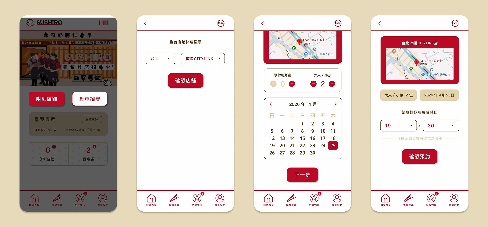
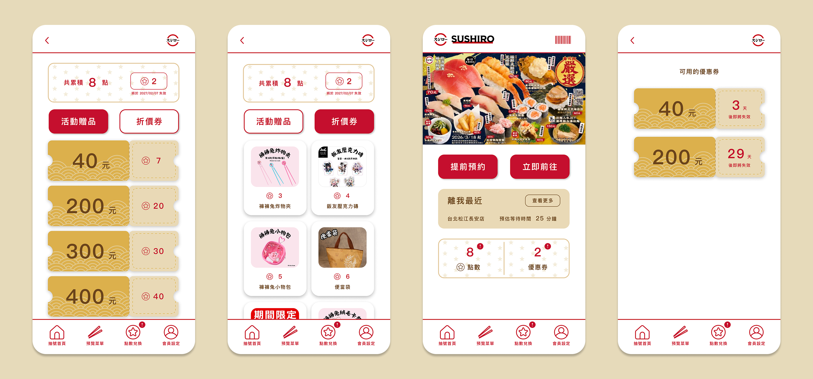

Sushiro Taiwan
App Redesign
Feb 2026 - Apr 2026
以自身使用經驗為切入點，選擇 Sushiro Taiwan 作為重新設計的對象，從實際操作過程中發現多項影響體驗的問題。進一步透過使用者訪談與觀察，整理並歸納出關鍵痛點與核心需求，作為後續設計優化的依據。
本專案聚焦於預約流程的優化與整體體驗提升，從資訊架構、操作流程到介面呈現進行系統性調整，降低使用者在預約過程中的認知負擔與操作成本，同時提升流程的直覺性與效率，讓使用體驗更加流暢且符合實際使用情境。

Problem & Goal
現有 App 介面存在重複資訊與不必要的操作步驟，導致資訊層級不清晰，也增加使用者操作上的負擔。因此，本次重新設計將聚焦於優化資訊架構與操作流程，透過整合功能與簡化路徑，提升整體使用效率與體驗。

預約流程存在操作與邏輯問題，影響任務完成效率
優化預約流程的操作，減少使用者的認知負擔

預約資訊入口重複且不明確，降低可發現性(discoverability)
將預約資訊統整合併顯示，引導使用者直覺點擊正確入口

點數和優惠券缺乏明確到期提示，影響使用者決策與參與度
在首頁就能直觀看到到期提示，提升使用者參與度與回訪率
Process
User Research
訪談六位 20–50 歲的使用者，了解他們在使用 Sushiro Taiwan App 過程中的操作習慣與不便之處，並根據研究結果歸納核心痛點與建立 Persona，作為後續優化方向的依據。


User Flow Optimization
重新梳理預約與報到流程，整合重複操作並強化系統回饋，引導使用者以更直覺的方式完成預約、查詢與現場報到，提升整體流程效率與使用體驗。

* red sections indicate the optimized flow
Information Architecture Refinement
整合會員與點數相關功能，依使用情境重新規劃資訊架構。將高頻使用的點數兌換功獨立呈現，並移除與首頁重複的預約入口，降低導覽層級與認知負擔，讓使用者更快速找到所需功能。

目前預約資訊分散於首頁資訊卡與底部收合選單，且需經過多次點擊才能查看完整內容。透過整合為單一入口並直接導向預約詳情頁，縮短操作路徑，提升資訊可發現性與使用效率。

將分散於預約頁面的重複 CTA 整合至首頁主要操作區，集中預約決策入口。同時新增跨縣市店舖預約功能，提升店舖搜尋彈性，讓使用者能依需求快速選擇合適門市。

Wireframing ＆ Iteration
探索不同首頁資訊架構與預約入口配置，透過低保真線框驗證功能分組、導覽模式與 CTA 規劃對使用流程的影響。

* 立即前往

* 提前預約（縣市搜尋）

* 提前預約（附近店舖）

經使用者測試後發現，底部導覽(Option B) 更符合 App 的操作習慣，因此保留作為主要功能入口；首頁最新消息則維持 Hero Carousel (Option A) 形式，以能讓使用者直接觸及。另一方面，將預約功能拆分為三個 CTA (Option B) 雖能減少後續操作步驟，卻增加初始決策成本，導致部分使用者難以快速理解各選項差異。此外，禮物圖示與點數兌換的關聯性不足、首頁缺少附近店舖等候時間資訊，以及點數到期缺乏提醒機制等問題仍未被解決，因此於後續高保真設計中進一步優化相關資訊呈現與功能配置。
High-Fidelity Design
根據設計方向製作高擬真設計（High-Fi），完善視覺風格、互動細節與品牌一致性。呈現最終設計成果，說明優化後的使用流程、關鍵改動與體驗提升成效。

Final Solution
將「提前預約」與「立即前往」作為首頁核心操作，並透過卡片分區與資訊重整，提升重要功能的可見性與操作直覺性。
🔗 Figma Mock-Up左側為原 App 從預約到報到的操作流程，右側則為重新設計後的版本。重新設計的重點放在「減少頁面跳轉」與「提高資訊可讀性」：首頁提前整合候位號碼、等待時間與用餐資訊，使用者抵達店舖後可直接點擊資訊卡進入詳細頁面並完成報到。相較於原流程需要在首頁不同資訊間尋找入口，新版本讓預約、候位與報到資訊更集中，提升流程的連續性與操作掌握度。
使用者可從首頁直接進入店舖搜尋 Overlay，透過縣市與店舖的雙層選單快速完成選擇，接續依序確認人數、日期與可預約時段。流程中僅顯示有空位的用餐時間，降低無效操作與資訊干擾，使整體預約體驗更直覺且有效率。

重新整理點數與優惠券的資訊架構，將首頁的點數與優惠券入口直接連接至對應的兌換專區，減少原本多餘的點擊。新版介面也將「活動贈品」與「折價券」進行明確分類，讓使用者能更快速辨識不同兌換內容，同時提升點數資訊與優惠券狀態的可讀性，強化整體瀏覽與兌換效率。

Reflection
這次的重新設計起點，來自自身的使用經驗。在實際使用 App 的過程中，發現流程中存在許多操作斷點、重複資訊與重複入口，需要在不同頁面之間反覆切換與確認，增加整體操作負擔。因此，我希望透過重新梳理資訊架構與操作流程，改善預約與兌換體驗的流暢度。
在專案初期，我一度傾向大幅簡化介面與資訊內容，認為減少資訊量能降低使用負擔，因此省略了部分資訊，例如預約詳細頁面的叫號號碼、首頁附近店舖的等待時間等。然而，經過多輪使用者訪談後，我發現使用者真正需要的並不只是「簡化」，而是能夠在流程中獲得足夠的狀態資訊與掌握感。適當且即時的資訊呈現，反而能有效降低不確定性，提升使用過程中的安心感與信任感。
這次專案也讓我重新思考「簡潔」與「有效資訊」之間的平衡。UX 設計並非單純地刪減內容，而是需要理解不同情境下，哪些資訊能真正幫助使用者完成決策與建立流程信心。